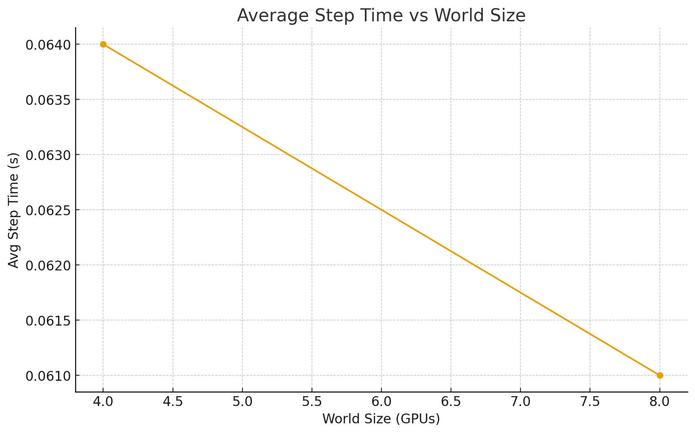
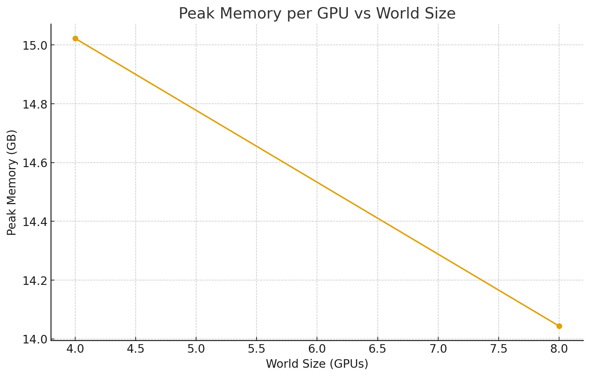

Scaling Optimizers with a Minimal ZeRO-2 Implementation in PyTorch In modern large-scale deep learning, the optimizer (and not just the model) becomes a bottleneck. As parameter counts scale into the billions, naively storing optimizer state (e.g. Adam’s first and second moment estimates) on every GPU quickly exceeds memory budgets. Microsoft’s ZeRO (Zero Redundancy Optimizer) [Rajbhandari et al., 2020] introduced a family of techniques for sharding optimizer state, gradients, and parameters across distributed workers. This drastically reduces memory overhead while preserving synchronous training semantics. In this post, I’ll walk through a minimal ZeRO-2 implementation in PyTorch: a custom optimizer that shards gradients and optimizer states across workers, but I’ll be keeping parameters replicated. I’ll show how it integrates with PyTorch’s distributed primitives and how I benchmarked its memory and communication efficiency.
Why ZeRO-2? At a high level, ZeRO splits training across GPUs in three progressive stages: Stage 1 (Optimizer State Sharding): Each worker only holds the optimizer states for a shard of parameters. Stage 2 (Gradient Sharding): Gradients are also sharded across workers, reducing memory overhead further. Stage 3 (Parameter Sharding): Parameters themselves are partitioned, removing replication altogether. My code implements Stage 2. Parameters remain replicated (so forward/backward is standard), but gradients and optimizer states are sharded. This yields big memory savings while retaining straightforward data-parallel semantics.
A Minimal ZeRO-2 Optimizer in PyTorch The core of the implementation is the Zero2Adam class. It mirrors PyTorch’s torch.optim.Adam but uses distributed primitives (reduce_scatter and broadcast) to shard work across GPUs.
Step 1: Flatten parameters and grads Instead of managing parameter tensors individually, I flatten all parameters into a single 1D buffer. This makes sharding and communication simpler:
flat_param = torch.cat([p.data.view(-1) for p in params], dim=0)
flat_grad = torch.cat([p.grad.view(-1) for p in params], dim=0)Now, optimizer state can be managed as slices into this flat buffer.
Step 2: Reduce-Scatter gradients Each rank computes local gradients, then participates in a reduce_scatter:
dist.reduce_scatter(recv, in_chunks, op=dist.ReduceOp.SUM)This operation both sums gradients across ranks and scatters shards of the summed result. After dividing by world_size, each rank holds only its local shard of the global gradient. This eliminates full replication of gradient buffers.
Step 3: Adam update on local shard Each rank maintains optimizer states (m, v) only for its shard. Updates are applied locally:
self._m.mul_(b1).add_(g, alpha=1-b1)
self._v.mul_(b2).addcmul_(g, g, value=1-b2)
m_hat = self._m / (1 - b1**t)
v_hat = self._v / (1 - b2**t)
local_param.addcdiv_(m_hat, v_hat.sqrt().add(eps), value=-lr)This keeps memory proportional to 1 / world_size.
Step 4: Broadcast updated shards After updating, parameters must be synchronized across ranks. Each rank broadcasts its updated shard:
dist.broadcast(seg, src=src)At the end of this step, all workers have identical model weights, ready for the next forward pass.
Step 5: Scatter back to original tensors Finally, the flat buffer is scattered back into the original parameter tensors:
for p in self.params:
p.data.copy_(flat_param[offset:offset+n].view_as(p.data))This maintains PyTorch compatibility with minimal changes.
Communication & Memory Efficiency
A key aspect of this implementation of ZeRO-2 is reducing redundant memory: With vanilla Adam, each rank stores: Parameters: O(N) Gradients: O(N) Adam states (m, v): O(2N) Total: 4N per rank
With ZeRO-2: Parameters: O(N) (still replicated) Gradients: O(N / world_size) Adam states: O(2N / world_size) Total: ~N + 3N / world_size per rank For large world sizes, this approaches O(N) per rank instead of O(4N).
Training loop and benchmarking:
The training loop uses synthetic data (10k-dim vectors) to stress memory and communication:
for epoch in range(epochs):
loss = F.mse_loss(model(x), y)
loss.backward()
opt.step()After each epoch, I log peak GPU memory and communication statistics: example: [Epoch 0] loss=0.9981 peak_mem=455.12MB [Stats] reduce_scatter / step: 1.0 broadcast / step: 8.0 avg step time: 0.034s avg comm time: 0.011s
Why This Matters This vanilla implementation of ZeRO-2 optimizer shows how distributed primitives can drastically reduce memory overhead without rewriting the training loop. It’s only a few hundred lines of code, but captures the essence of a technique that underpins training of models like GPT-3 and beyond. What makes this elegant is that the forward/backward path is untouched—only the optimizer is modified. This is why ZeRO became such a practical and impactful idea: it slots into existing training pipelines with minimal disruption, but unlocks model scales that would otherwise be infeasible.
Below is the full working code that works using modal, which i separated into 2 files - one for the implementation and one for the code execution
# modal_zero2.py
import os
import subprocess
import modal
from modal import Image
image = (
Image.from_registry("pytorch/pytorch:2.3.1-cuda12.1-cudnn8-runtime")
.env({
"HF_HOME": "/workspace/.cache/huggingface",
"NCCL_DEBUG": "WARN",
"NCCL_IB_DISABLE": "1",
"TORCH_NCCL_BLOCKING_WAIT": "0",
})
# 👇 LAST: include your training script
.add_local_file("zero2_train.py", remote_path="/workspace/zero2_train.py")
)
app = modal.App("zero2-modal")
@app.function(image=image, gpu="A100-40GB:8", timeout=24*60*60)
def run_zero2(nproc_per_node: int = 8, epochs: int = 100):
os.chdir("/workspace")
torchrun_cmd = ["torchrun", f"--nproc_per_node={nproc_per_node}", "zero2_train.py", f"--epochs={epochs}"]
fallback_cmd = ["python", "-m", "torch.distributed.run", f"--nproc_per_node={nproc_per_node}", "zero2_train.py", f"--epochs={epochs}"]
def run(cmd):
print("Launching:", " ".join(cmd), flush=True)
p = subprocess.Popen(cmd); p.wait(); return p.returncode
rc = run(torchrun_cmd)
if rc != 0:
print("torchrun failed; retrying with python -m torch.distributed.run", flush=True)
rc = run(fallback_cmd)
if rc != 0:
raise SystemExit(rc)
print("Training completed ✔", flush=True)
@app.local_entrypoint()
def main(nproc: int = 8, epochs: int = 100):
run_zero2.remote(nproc, epochs)# zero2_train.py
import argparse
import time
import torch
import torch.distributed as dist
import torch.nn as nn
from torch.optim import (
Adam,
Optimizer,
)
def set_seed(seed: int):
torch.manual_seed(seed)
torch.cuda.manual_seed_all(seed)
class Zero2Adam:
"""
Minimal ZeRO-2 optimizer:
- Params replicated across ranks
- Gradients + optimizer state are sharded across ranks (flat buffer)
- Each rank updates only its local shard, then all shards are broadcast
"""
def __init__(self, params, lr=1e-3, betas=(0.9, 0.999), eps=1e-8, weight_decay=0.0):
self.params = [p for p in params if p.requires_grad]
# Dist
self.world_size = dist.get_world_size()
self.rank = dist.get_rank()
# Adam hyperparams
self.lr = lr
self.betas = betas
self.eps = eps
self.weight_decay = weight_decay
# Lazily built
self._flat_shapes = None
self._flat_offsets = None
self._numel_total = None
self._shard_start = None
self._shard_end = None
self._shard_len = None
# Adam state for local shard
self._m = None
self._v = None
self._t = 0
self._state_init = False
# Stats
self.communication_time = 0.0
self.step_time = 0.0
self.reduce_scatter_count = 0
self.broadcast_count = 0
# ---------- helpers ----------
def _build_flat_views(self):
with torch.no_grad():
device = self.params[0].device
dtype = self.params[0].dtype
shapes, offsets, chunks = [], [], []
off = 0
for p in self.params:
n = p.numel()
shapes.append(p.data.shape)
offsets.append((off, off + n))
off += n
chunks.append(p.data.view(-1))
flat_param = torch.cat(chunks, dim=0).to(device=device, dtype=dtype)
self._flat_shapes = shapes
self._flat_offsets = offsets
self._numel_total = flat_param.numel()
return flat_param
def _flat_grads(self):
device = self.params[0].device
grads = []
for p in self.params:
if p.grad is None:
grads.append(torch.zeros_like(p.data, device=device))
else:
grads.append(p.grad.data)
return torch.cat([g.view(-1) for g in grads], dim=0)
def _compute_shard_bounds(self, total_numel: int):
shard = (total_numel + self.world_size - 1) // self.world_size
start = self.rank * shard
end = min(start + shard, total_numel)
return start, end, shard
def _init_state_if_needed(self, flat_param):
if self._state_init:
return
total = flat_param.numel()
start, end, shard = self._compute_shard_bounds(total)
self._shard_start, self._shard_end = start, end
self._shard_len = end - start
device = flat_param.device
dtype = flat_param.dtype
self._m = torch.zeros(self._shard_len, device=device, dtype=dtype)
self._v = torch.zeros(self._shard_len, device=device, dtype=dtype)
self._t = 0
self._state_init = True
def zero_grad(self):
for p in self.params:
p.grad = None
@torch.no_grad()
def step(self):
step_start = time.perf_counter()
device = self.params[0].device
# 1) Flat params & grads
flat_param = self._build_flat_views()
self._init_state_if_needed(flat_param)
flat_grad = self._flat_grads()
# 2) Reduce-scatter to local grad shard
comm_start = time.perf_counter()
pad = (self.world_size - (flat_grad.numel() % self.world_size)) % self.world_size
if pad:
flat_grad = torch.nn.functional.pad(flat_grad, (0, pad))
chunk_sz = flat_grad.numel() // self.world_size
in_chunks = list(flat_grad.split(chunk_sz, dim=0))
recv = torch.empty(chunk_sz, device=device, dtype=flat_grad.dtype)
dist.reduce_scatter(recv, in_chunks, op=dist.ReduceOp.SUM)
self.reduce_scatter_count += 1
local_len = self._shard_end - self._shard_start
local_grad = recv[:local_len].div_(self.world_size)
torch.cuda.synchronize()
self.communication_time += time.perf_counter() - comm_start
# 3) Adam update on local shard
self._t += 1
b1, b2 = self.betas
local_param = flat_param[self._shard_start:self._shard_end]
g = local_grad
if self.weight_decay:
g = g.add(local_param, alpha=self.weight_decay)
self._m.mul_(b1).add_(g, alpha=1 - b1)
self._v.mul_(b2).addcmul_(g, g, value=1 - b2)
m_hat = self._m / (1 - b1 ** self._t)
v_hat = self._v / (1 - b2 ** self._t)
local_param.addcdiv_(m_hat, v_hat.sqrt().add(self.eps), value=-self.lr)
flat_param[self._shard_start:self._shard_end] = local_param
# 4) Broadcast each shard from its owner so all ranks sync full params
total = self._numel_total
_, _, shard_span = self._compute_shard_bounds(total)
for src in range(self.world_size):
s = src * shard_span
e = min(s + shard_span, total)
if dist.get_rank() == src:
seg = flat_param[s:e]
else:
seg = torch.empty(e - s, device=device, dtype=flat_param.dtype)
dist.broadcast(seg, src=src)
self.broadcast_count += 1
if dist.get_rank() != src:
flat_param[s:e] = seg
# 5) Scatter flat back to params; clear grads
off = 0
for p in self.params:
n = p.numel()
p.data.copy_(flat_param[off:off + n].view_as(p.data))
p.grad = None
off += n
torch.cuda.synchronize()
self.step_time += time.perf_counter() - step_start
def build_model(d: int = 10_000, depth: int = 6):
layers = []
for _ in range(depth):
layers += [nn.Linear(d, d), nn.ReLU()]
layers += [nn.Linear(d, d)]
return nn.Sequential(*layers)
def train_loop(epochs: int, device: torch.device):
rank = dist.get_rank()
world_size = dist.get_world_size()
if rank == 0:
print(f"[Init] world_size={world_size}")
model = build_model().to(device)
base_opt = Adam(model.parameters(), lr=1e-3) # only for param listing
opt = Zero2Adam(model.parameters(), lr=1e-3, betas=(0.9, 0.999), eps=1e-8, weight_decay=0.0)
# synthetic data
bsz = 16
x = torch.randn(bsz, 10_000, device=device)
y = torch.randn(bsz, 10_000, device=device)
# warmup
opt.zero_grad()
loss = nn.functional.mse_loss(model(x), y)
loss.backward()
opt.step()
torch.cuda.synchronize()
# reset stats
opt.communication_time = 0.0
opt.step_time = 0.0
opt.reduce_scatter_count = 0
opt.broadcast_count = 0
for epoch in range(epochs):
torch.cuda.reset_peak_memory_stats(device)
opt.zero_grad()
out = model(x)
loss = nn.functional.mse_loss(out, y)
loss.backward()
opt.step()
peak_mb = torch.cuda.max_memory_allocated(device) / 1024**2
if rank == 0:
print(f"[Epoch {epoch}] loss={loss.item():.4f} peak_mem={peak_mb:.2f}MB")
if rank == 0:
avg_steps = max(1, epochs)
print("\n[Stats]")
print(f"reduce_scatter / step: {opt.reduce_scatter_count/avg_steps:.1f}")
print(f"broadcast / step: {opt.broadcast_count/avg_steps:.1f}")
print(f"avg step time: {opt.step_time/avg_steps:.3f}s")
print(f"avg comm time: {opt.communication_time/avg_steps:.3f}s")
print(f"avg compute time: {(opt.step_time - opt.communication_time)/avg_steps:.3f}s")
def main():
parser = argparse.ArgumentParser()
parser.add_argument("--epochs", type=int, default=3)
parser.add_argument("--seed", type=int, default=42)
args = parser.parse_args()
# torchrun provides LOCAL_RANK / RANK / WORLD_SIZE
local_rank = int(os.environ.get("LOCAL_RANK", "0"))
torch.cuda.set_device(local_rank)
set_seed(args.seed)
dist.init_process_group("nccl")
device = torch.device(f"cuda:{local_rank}")
train_loop(args.epochs, device)
dist.destroy_process_group()
if __name__ == "__main__":
import os
main()Reults of 2 runs:
Launching: torchrun –nproc_per_node=4 zero2_train.py –epochs=100 [Init] world_size=4 NCCL version 2.20.5+cuda12.1 [Epoch 0] loss=21496.0859 peak_mem=15382.90MB [Epoch 1] loss=1.0013 peak_mem=15382.90MB [Epoch 2] loss=0.9970 peak_mem=15382.90MB [Epoch 3] loss=0.9674 peak_mem=15382.90MB [Epoch 4] loss=2.4202 peak_mem=15382.90MB [Epoch 5] loss=0.9618 peak_mem=15382.90MB [Epoch 6] loss=0.9901 peak_mem=15382.90MB [Epoch 7] loss=0.9950 peak_mem=15382.90MB [Epoch 8] loss=0.9904 peak_mem=15382.90MB [Epoch 9] loss=0.9757 peak_mem=15382.90MB [Epoch 10] loss=0.9704 peak_mem=15382.90MB [Epoch 11] loss=0.9503 peak_mem=15382.90MB [Epoch 12] loss=0.9457 peak_mem=15382.90MB [Epoch 13] loss=0.9525 peak_mem=15382.90MB [Epoch 14] loss=0.9526 peak_mem=15382.90MB [Epoch 15] loss=0.9511 peak_mem=15382.90MB [Epoch 16] loss=0.9418 peak_mem=15382.90MB [Epoch 17] loss=0.9518 peak_mem=15382.90MB [Epoch 18] loss=0.9413 peak_mem=15382.90MB [Epoch 19] loss=0.9471 peak_mem=15382.90MB [Epoch 20] loss=0.9427 peak_mem=15382.90MB [Epoch 21] loss=0.9376 peak_mem=15382.90MB [Epoch 22] loss=0.9426 peak_mem=15382.90MB [Epoch 23] loss=0.9346 peak_mem=15382.90MB [Epoch 24] loss=0.9335 peak_mem=15382.90MB [Epoch 25] loss=0.9314 peak_mem=15382.90MB [Epoch 26] loss=0.9230 peak_mem=15382.90MB [Epoch 27] loss=0.9154 peak_mem=15382.90MB [Epoch 28] loss=0.9099 peak_mem=15382.90MB [Epoch 29] loss=0.8996 peak_mem=15382.90MB [Epoch 30] loss=0.8942 peak_mem=15382.90MB [Epoch 31] loss=0.8908 peak_mem=15382.90MB [Epoch 32] loss=0.8951 peak_mem=15382.90MB [Epoch 33] loss=0.8831 peak_mem=15382.90MB [Epoch 34] loss=0.8814 peak_mem=15382.90MB [Epoch 35] loss=0.8836 peak_mem=15382.90MB [Epoch 36] loss=0.8794 peak_mem=15382.90MB [Epoch 37] loss=0.8783 peak_mem=15382.90MB [Epoch 38] loss=0.8794 peak_mem=15382.90MB [Epoch 39] loss=0.8775 peak_mem=15382.90MB [Epoch 40] loss=0.8778 peak_mem=15382.90MB [Epoch 41] loss=0.8765 peak_mem=15382.90MB [Epoch 42] loss=0.8759 peak_mem=15382.90MB [Epoch 43] loss=0.8749 peak_mem=15382.90MB [Epoch 44] loss=0.8727 peak_mem=15382.90MB [Epoch 45] loss=0.8703 peak_mem=15382.90MB [Epoch 46] loss=0.8662 peak_mem=15382.90MB [Epoch 47] loss=0.8593 peak_mem=15382.90MB [Epoch 48] loss=0.8469 peak_mem=15382.90MB [Epoch 49] loss=0.8331 peak_mem=15382.90MB [Epoch 50] loss=0.8183 peak_mem=15382.90MB [Epoch 51] loss=0.8073 peak_mem=15382.90MB [Epoch 52] loss=0.8059 peak_mem=15382.90MB [Epoch 53] loss=0.7996 peak_mem=15382.90MB [Epoch 54] loss=0.7966 peak_mem=15382.90MB [Epoch 55] loss=0.7875 peak_mem=15382.90MB [Epoch 56] loss=0.7802 peak_mem=15382.90MB [Epoch 57] loss=0.7760 peak_mem=15382.90MB [Epoch 58] loss=0.7737 peak_mem=15382.90MB [Epoch 59] loss=0.7627 peak_mem=15382.90MB [Epoch 60] loss=0.7592 peak_mem=15382.90MB [Epoch 61] loss=0.7539 peak_mem=15382.90MB [Epoch 62] loss=0.7466 peak_mem=15382.90MB [Epoch 63] loss=0.7384 peak_mem=15382.90MB [Epoch 64] loss=0.7301 peak_mem=15382.90MB [Epoch 65] loss=0.7226 peak_mem=15382.90MB [Epoch 66] loss=0.7140 peak_mem=15382.90MB [Epoch 67] loss=0.7052 peak_mem=15382.90MB [Epoch 68] loss=0.6921 peak_mem=15382.90MB [Epoch 69] loss=0.6763 peak_mem=15382.90MB [Epoch 70] loss=0.6630 peak_mem=15382.90MB [Epoch 71] loss=0.6531 peak_mem=15382.90MB [Epoch 72] loss=0.6527 peak_mem=15382.90MB [Epoch 73] loss=0.6425 peak_mem=15382.90MB [Epoch 74] loss=0.6357 peak_mem=15382.90MB [Epoch 75] loss=0.6330 peak_mem=15382.90MB [Epoch 76] loss=0.6259 peak_mem=15382.90MB [Epoch 77] loss=0.6224 peak_mem=15382.90MB [Epoch 78] loss=0.6163 peak_mem=15382.90MB [Epoch 79] loss=0.6109 peak_mem=15382.90MB [Epoch 80] loss=0.6087 peak_mem=15382.90MB [Epoch 81] loss=0.5960 peak_mem=15382.90MB [Epoch 82] loss=0.5903 peak_mem=15382.90MB [Epoch 83] loss=0.5762 peak_mem=15382.90MB [Epoch 84] loss=0.5665 peak_mem=15382.90MB [Epoch 85] loss=0.5545 peak_mem=15382.90MB [Epoch 86] loss=0.5452 peak_mem=15382.90MB [Epoch 87] loss=0.5360 peak_mem=15382.90MB [Epoch 88] loss=0.5253 peak_mem=15382.90MB [Epoch 89] loss=0.5173 peak_mem=15382.90MB [Epoch 90] loss=0.5073 peak_mem=15382.90MB [Epoch 91] loss=0.4968 peak_mem=15382.90MB [Epoch 92] loss=0.4885 peak_mem=15382.90MB [Epoch 93] loss=0.4920 peak_mem=15382.90MB [Epoch 94] loss=0.4731 peak_mem=15382.90MB [Epoch 95] loss=0.4484 peak_mem=15382.90MB [Epoch 96] loss=0.4351 peak_mem=15382.90MB [Epoch 97] loss=0.4217 peak_mem=15382.90MB [Epoch 98] loss=0.4077 peak_mem=15382.90MB [Epoch 99] loss=0.3981 peak_mem=15382.90MB [Stats] reduce_scatter / step: 1.0 broadcast / step: 4.0 avg step time: 0.064s avg comm time: 0.030s avg compute time: 0.034s Training completed ✔ Launching: torchrun –nproc_per_node=8 zero2_train.py –epochs=100 [Init] world_size=8 NCCL version 2.20.5+cuda12.1 [Epoch 0] loss=21496.0859 peak_mem=14380.90MB [Epoch 1] loss=1.0013 peak_mem=14380.90MB [Epoch 2] loss=0.9970 peak_mem=14380.90MB [Epoch 3] loss=0.9674 peak_mem=14380.90MB [Epoch 4] loss=2.4202 peak_mem=14380.90MB [Epoch 5] loss=0.9618 peak_mem=14380.90MB [Epoch 6] loss=0.9901 peak_mem=14380.90MB [Epoch 7] loss=0.9951 peak_mem=14380.90MB [Epoch 8] loss=0.9904 peak_mem=14380.90MB [Epoch 9] loss=0.9757 peak_mem=14380.90MB [Epoch 10] loss=0.9704 peak_mem=14380.90MB [Epoch 11] loss=0.9504 peak_mem=14380.90MB [Epoch 12] loss=0.9460 peak_mem=14380.90MB [Epoch 13] loss=0.9526 peak_mem=14380.90MB [Epoch 14] loss=0.9512 peak_mem=14380.90MB [Epoch 15] loss=0.9494 peak_mem=14380.90MB [Epoch 16] loss=0.9421 peak_mem=14380.90MB [Epoch 17] loss=0.9484 peak_mem=14380.90MB [Epoch 18] loss=0.9416 peak_mem=14380.90MB [Epoch 19] loss=0.9457 peak_mem=14380.90MB [Epoch 20] loss=0.9405 peak_mem=14380.90MB [Epoch 21] loss=0.9393 peak_mem=14380.90MB [Epoch 22] loss=0.9399 peak_mem=14380.90MB [Epoch 23] loss=0.9340 peak_mem=14380.90MB [Epoch 24] loss=0.9343 peak_mem=14380.90MB [Epoch 25] loss=0.9303 peak_mem=14380.90MB [Epoch 26] loss=0.9233 peak_mem=14380.90MB [Epoch 27] loss=0.9179 peak_mem=14380.90MB [Epoch 28] loss=0.9084 peak_mem=14380.90MB [Epoch 29] loss=0.9034 peak_mem=14380.90MB [Epoch 30] loss=0.8992 peak_mem=14380.90MB [Epoch 31] loss=0.8877 peak_mem=14380.90MB [Epoch 32] loss=0.8912 peak_mem=14380.90MB [Epoch 33] loss=0.8802 peak_mem=14380.90MB [Epoch 34] loss=0.8824 peak_mem=14380.90MB [Epoch 35] loss=0.8806 peak_mem=14380.90MB [Epoch 36] loss=0.8812 peak_mem=14380.90MB [Epoch 37] loss=0.8801 peak_mem=14380.90MB [Epoch 38] loss=0.8785 peak_mem=14380.90MB [Epoch 39] loss=0.8774 peak_mem=14380.90MB [Epoch 40] loss=0.8788 peak_mem=14380.90MB [Epoch 41] loss=0.8771 peak_mem=14380.90MB [Epoch 42] loss=0.8743 peak_mem=14380.90MB [Epoch 43] loss=0.8734 peak_mem=14380.90MB [Epoch 44] loss=0.8710 peak_mem=14380.90MB [Epoch 45] loss=0.8683 peak_mem=14380.90MB [Epoch 46] loss=0.8633 peak_mem=14380.90MB [Epoch 47] loss=0.8566 peak_mem=14380.90MB [Epoch 48] loss=0.8529 peak_mem=14380.90MB [Epoch 49] loss=0.8339 peak_mem=14380.90MB [Epoch 50] loss=0.8157 peak_mem=14380.90MB [Epoch 51] loss=0.7987 peak_mem=14380.90MB [Epoch 52] loss=0.7999 peak_mem=14380.90MB [Epoch 53] loss=0.7692 peak_mem=14380.90MB [Epoch 54] loss=0.7672 peak_mem=14380.90MB [Epoch 55] loss=0.7537 peak_mem=14380.90MB [Epoch 56] loss=0.7445 peak_mem=14380.90MB [Epoch 57] loss=0.7436 peak_mem=14380.90MB [Epoch 58] loss=0.7358 peak_mem=14380.90MB [Epoch 59] loss=0.7283 peak_mem=14380.90MB [Epoch 60] loss=0.7241 peak_mem=14380.90MB [Epoch 61] loss=0.7181 peak_mem=14380.90MB [Epoch 62] loss=0.7107 peak_mem=14380.90MB [Epoch 63] loss=0.7072 peak_mem=14380.90MB [Epoch 64] loss=0.6992 peak_mem=14380.90MB [Epoch 65] loss=0.6903 peak_mem=14380.90MB [Epoch 66] loss=0.6811 peak_mem=14380.90MB [Epoch 67] loss=0.6731 peak_mem=14380.90MB [Epoch 68] loss=0.6628 peak_mem=14380.90MB [Epoch 69] loss=0.6492 peak_mem=14380.90MB [Epoch 70] loss=0.6375 peak_mem=14380.90MB [Epoch 71] loss=0.6247 peak_mem=14380.90MB [Epoch 72] loss=0.6078 peak_mem=14380.90MB [Epoch 73] loss=0.5926 peak_mem=14380.90MB [Epoch 74] loss=0.5793 peak_mem=14380.90MB [Epoch 75] loss=0.5666 peak_mem=14380.90MB [Epoch 76] loss=0.5571 peak_mem=14380.90MB [Epoch 77] loss=0.5529 peak_mem=14380.90MB [Epoch 78] loss=0.5428 peak_mem=14380.90MB [Epoch 79] loss=0.5325 peak_mem=14380.90MB [Epoch 80] loss=0.5249 peak_mem=14380.90MB [Epoch 81] loss=0.5177 peak_mem=14380.90MB [Epoch 82] loss=0.5086 peak_mem=14380.90MB [Epoch 83] loss=0.4968 peak_mem=14380.90MB [Epoch 84] loss=0.4864 peak_mem=14380.90MB [Epoch 85] loss=0.4787 peak_mem=14380.90MB [Epoch 86] loss=0.4646 peak_mem=14380.90MB [Epoch 87] loss=0.4540 peak_mem=14380.90MB [Epoch 88] loss=0.4443 peak_mem=14380.90MB [Epoch 89] loss=0.4353 peak_mem=14380.90MB [Epoch 90] loss=0.4323 peak_mem=14380.90MB [Epoch 91] loss=0.4189 peak_mem=14380.90MB [Epoch 92] loss=0.3985 peak_mem=14380.90MB [Epoch 93] loss=0.3899 peak_mem=14380.90MB [Epoch 94] loss=0.3807 peak_mem=14380.90MB [Epoch 95] loss=0.3647 peak_mem=14380.90MB [Epoch 96] loss=0.3544 peak_mem=14380.90MB [Epoch 97] loss=0.3462 peak_mem=14380.90MB [Epoch 98] loss=0.3372 peak_mem=14380.90MB [Epoch 99] loss=0.3282 peak_mem=14380.90MB [Stats] reduce_scatter / step: 1.0 broadcast / step: 8.0 avg step time: 0.061s avg comm time: 0.032s avg compute time: 0.029s Training completed ✔
Results:
Sharding Optimizer State & Gradients, Measured
I ran the minimal ZeRO-2 optimizer on 4× and 8× A100s (NCCL 2.20.5 + CUDA 12.1) and logged loss, peak memory, and per-step timing and comm stats.
Communication pattern per training step: 1× reduce_scatter (sum + scatter the flat grad) world_size broadcasts (each rank owns a param shard and broadcasts it)


Headline numbers Peak memory per GPU drops from 15.38 GB → 14.04 GB (≈ 0.98 GB reduction) moving 4 → 8 GPUs. Avg step time improves from 0.064 s → 0.061 s (~ 1.05× speedup). Broadcasts/step = world_size (4 vs 8), reduce_scatter/step = 1 (by design). Compute time shrinks (0.034 s → 0.029 s) as each rank updates a smaller shard; comm time edges up (0.030 s → 0.032 s) due to more shards to synchronize.
Why memory falls only ~1 GB? ZeRO-2 saves memory on gradients + optimizer state but keeps parameters replicated. Using the idealized model and fitting the 4→8 GPU drop (~0.98 GB) implies ~2.6–2.7 GB of parameters and a large constant C (activations, CUDA context, transient grads during backward, fragmentation, etc.). In my minimalist trainer, full per-parameter p.grad tensors still materialize during backward (before flattening and reduce-scatter), which limits peak-mem gains.